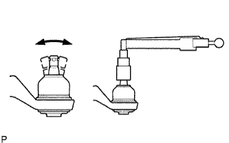

ĐÒN TREO DƯỚI PHÍA TRƯỚC > KIỂM TRA |
| 1. KIỂM TRA ĐÒN TREO DƯỚI TRƯỚC TRÁI |
|  |
Như được chỉ ra trên hình vẽ, lắc nhẹ vít cấy khớp cầu ra trước và sau khoảng 5 lần trước khi lắp đai ốc.
Dùng một cân lực, vặn đai ốc liên tục với tốc độ 3 đến 5 giây/vòng và đọc giá trị ở vòng thứ 5.
Kiểm tra xem có vết nứt hoặc chảy mỡ trên chắn bụi khớp cầu không.